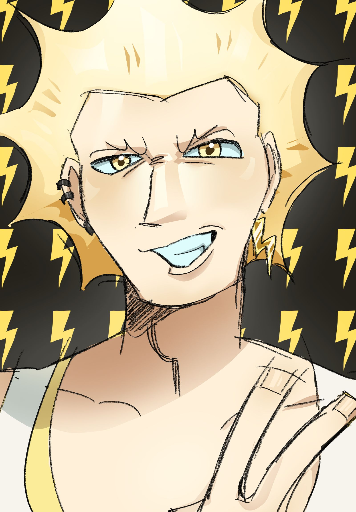
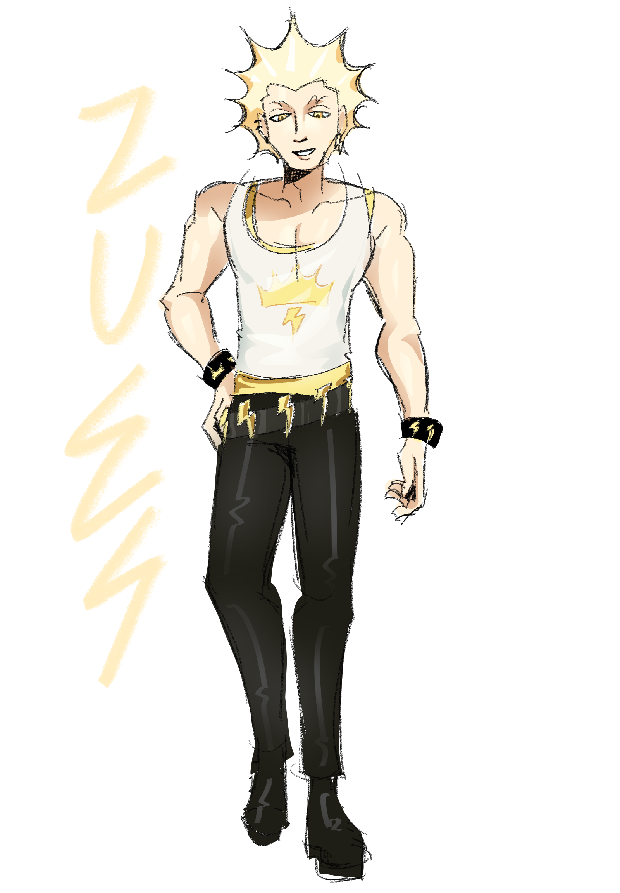

Information
ซุส เทพแห่งสายฟ้า และเป็นราชันย์แห่งทวยเทพ เป็นบุตรคนสุดท้องของโครนัสและไกอา พระองค์สมรสกับฮีรา พระองค์ทรงเป็นที่รู้จักในเรื่องกาม ซึ่งส่งผลให้พระองค์มีพระโอรสธิดาที่เป็นพระเจ้าและวีรบุรุษมากมาย เช่น อะธีนา
อะพอลโลและอาร์ทิมิส เฮอร์มีส เพอร์เซฟะนี ไดอะไนซัส เพอร์ซิอัส เฮราคลีส เฮเลนแห่งทรอย มิวส์ แอรีส ฮีบีและ
ฮิฟีสตัส
Myth
ตำนานที่น่าสนใจอย่างหนึ่งของซุส คือ เทพซุสทรงแปลงกายเป็น หงส์ เพื่อเข้าหานางลีดา ทำให้ในคืนนั้นนางลีดาตั้งครรภ์และออกไข่มา 2 ฟอง โดยฟองหนึ่งฟองให้กำเนิด นางคลีเทมเนสตรา และนางเฮเลนที่มีความงดงามที่สุดในโลก แต่ด้วยเหตุชุลมุนวุ่นวาย จึงเกิดเหตุที่เจ้าชายปารีสแห่งกรุงทรอย ชิงตัวนางไปจากพระเจ้าเมเนเลอัสแห่งสปาร์ตา และเกิดสงครามกรุงทรอยขึ้นมา จนนำไปสู่มหากาพย์ที่สำคัญคือ อีเลียด และโอดิสซี ส่วนไข่อีกฟองให้กำเนิด แคสเตอร์ และพอลลักซ์ ฝาแฝดผู้ที่ต่อมา จะกลายเป็นหมู่ดาวคนคู่